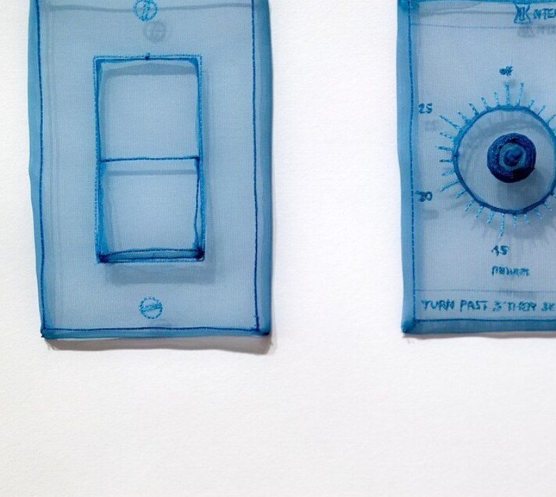

Themes & Materials
What is home? What do we take with us when we move? And how much of who we are comes from the people around us?
Four threads through the work
Home
Not just a building, but the feeling of a place. Suh measures and sews his homes so he can keep them.
Displacement
Moving between Korea, the US, and the UK left him between places. His work lives in that in-between.
Memory
Details like a radiator or a light switch are copied exactly: the small things we remember without trying.
Identity
Uniforms and crowds ask where the individual ends and the group begins.
A second skin
Suh thinks of clothing as our first, closest layer, and architecture as the next one out. Fabric lets him bring the two together. Walls become soft, rooms become see-through, and a whole house becomes light enough to carry.
Pointing back to Korea
Many of his materials connect to Korean tradition. The silk of his early houses recalls the fabric of the hanbok, Korea's traditional clothing, and his works on paper use rice paper, like the paper doors of a hanok.